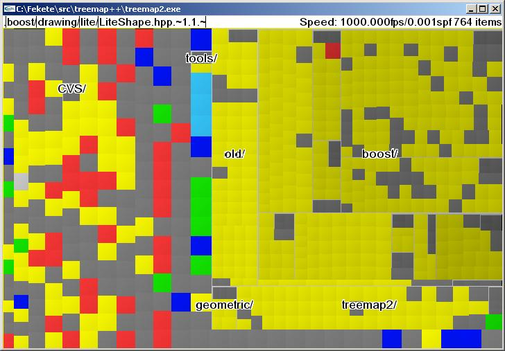

Treemap2 is a high performance information visualization program that visualizes your data using either treemaps or scatter plots on accelerated graphics cards using OpenGL.
You can get the program at the following location: http://www.cs.umd.edu/hcil/millionvis/download/millionvis.zip
The sources are also available under the Gnu Public Licence (GPL) at the following location: millionvis-src.zip
The distribution can be unzipped anywhere. The program has to be started from the directory since it uses some of its files.
The treemap2 program is started from a command prompt in Windows or a shell prompt in Unix or Linux.
Starting it without arguments will show the current directory and subdirectories as a treemap.
If provided an argument, the treemap2 program will first try to load a file of that name as an XML file. If it cannot be found or is not an XML file, the program will try to load it as a directory.
By default, the program takes the entire screen. Starting it with the "-f" option will make it smaller and resizeeable.
To load an XML file called "dir.xml", just type:
treemap2 dir.xml
It can also be compressed with gzip or compress and be called
"dir.xml.gz" or "dir.xml.Z", the program will still read it
with:
treemap2 dir.xml.gz
Compressing an XML file using the gzip program will provide an important compression rate and a faster loading.
To load the root directory of disk C on Windows, just type:
treemap2 c:/
The command will read all the files in the C: disk and, after a amount of time depending on the number of files on the disk, il will show the entire disk on the screen as a treemap.
Once a treemap is displayed, navigating is done with the mouse and the shift key.
At startup time, the only displayed labels are names of the items at the first level of the displayed hierarchy.
For example, if you loaded the current directory and it contains three subdirectories: A, B and C, only these three labels will be visible, each at the center of their respective rectangles.
When loading from an XML file, only the "root" directory is visible so one label is displayed at the center of the screen.
When moving the mouse, the path under the pointer is displayed at the top of the screen.
When stoping to move for a second, the labels change. They display the names of the elements of the hierarchy. This is a dynamic labeling.
When moving slowly, this display remains and follows the pointer. When moving quickly, the dynamic labeling disappears and the first-level labels come back.
Clicking on a label dynamic label zooms its to full screen. When pressing the shift key, the dynamic labels and the path on top of the screen are frozen. Clicking on either of them will zoom in or out. As a conveninence, clicking on the top bar outside of the path will zoom back to the root.
To display menus, click with the right button. It will display a tabbed pane with two menus, one for configuring the visualization and the other one to perform dynamic queries.
The menus disappear when the mouse in not over them, leaving only an outline. Clicking right another time will remove it completely.
The menu items have the following meaning:
Choose among Squarified treemap, Strip treemap, slice and dice treemap or scatter plot.
Chose the attribute mapped to rectangle size
Chose the attribute mapped to rectangle color
Chose the range of colors used for visualization inside the total range of colors.
Choose whether colors are categorical or sequential. Two color schemes are provided for both.
Chose the attribute mapped to the Y position for scatter plots
Chose the attribute mapped to the X position for scatter plots
For scatter plots, chose the smaller and larger size of rectangles
For treemaps, choose the sorting order.
For scatter plots, chose a transparency level so that overlaped items will still remain visible
For scatter plots, change the sizes by blending the previously assiogned size with the currently assigned size
For scatter plots, change the border thicknesses for directories
For scatter plots, show all the labels at the first hierachy level, whether directories of files
Don't use it now
Just hit the "Esc" key.
treemap2 uses two files for its configuration: "file_types.txt" and ".properties". These two files can be modified for specific purposes.
The file "file_types.txt" contains the mapping between file extensions and their associated category, usually mapped with a color in treemap2. The standard file contains the following rules:
This mapping reads: file ending with .gz etc are of category 1, files ending with .arj are of category 2, etc. Actually, category 1 is a bit special since it means "compressed" and is removed from the file name to recompute the file type.
The default file is meant to map standard file types to 8 categories, roughly archives (2), binary (3), images (4), text (5), multimedia (6), 3D scenes (7), programming (8).
To visualize a more specific directory, this file can be changed. For instance, for visualizing the linux kernel source tree, the mapping is available there.
The file ".properies" contains the default settings for fonts and font sizes. These sizes are "resolution independent" so in a high resolution monitor, the size will be still readable (if the screen resolution is correctly declared to the sytstem). You can change it too.
Sometimes, the program hungs for a few seconds. This is due to the "garbage collector", i.e. the program reclaims memory that is not used any more.
Depending on the actual machine you are using, it may take from a few seconds to thirty seconds. Don't do anything. Let it finish.
This program is a research prototype and should be considers as such. Don't hesitate to report bugs, problems and other thoughts to Jean-Daniel Fekete at fekete@cs.umd.edu